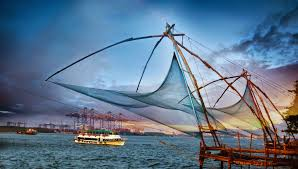
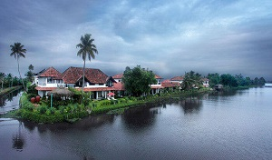
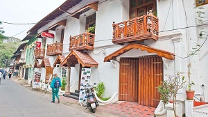
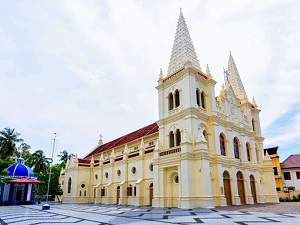
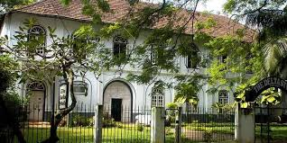
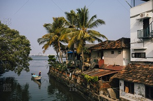
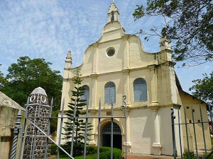

Home
(current)
Explore
Districts
Adventure
Holiday Packages
Cusines
Heritage
The Wild
Reviews
Destination
WaterFalls
Beaches
Museum
Contact Us
Sign In
Search
ERNAKULAM
Soaked in history and the many different grandeurs of Kerala, Ernakulam is one of the most stunning destinations in God’s Own Country! The once a capital of the Kingdom of Cochin, this township is a major commercial area in Kochi and is also called the ‘Commercial Capital of Kerala’. While the existence of this city dates back to the Stone Age, today it is revered to have the most electrifying ambience in the entire country. Ancient, yet with modern charm, Ernakulam also serves as a throbbing hub for budding entrepreneurs and also contributes significantly to the state’s tourism industry.
How to Reach:
Bus
The cosmopolitan is well-connected with all the major cities and towns in Kerala through a network of State Highways. Both government and private buses, car rentals and local taxis are available to reach Ernakulam by road. Nearby cities like Bangalore, Mysore, Mangalore, and others are also well-connected through road networks.
Train
Ernakulam is connected to almost every corners of India through its rail network. The Ernakulam Junction Railway Station within the city limits serves as the most ideal spot to reach Ernakulam by train.
Flight
Located around 27km away, Cochin International Airport is the nearest airport to reach Ernakulam by air. From the airport, one can easily hire or book road transport options to reach the cosmopolitan by road.
Places to Visit
Fort Kochi:
A visit to Fort Kochi can be called as a journey back into time! Fringed with numerous tourist attractions and historical landmarks, it is a melting ground of different cultures and traditions.
Marine Drive:
A popular hangout destination, Marine Drive is undoubtedly the most stunning place to be in while in Ernakulam. A 3km backwater-facing walkway, it is known for offering mesmerising sunset views. Come evening, this walkway turns magical with multi-coloured illuminations and creates an electrifying ambience all around!
Bolghatty Palace:
Whether you are in Ernakulam or anywhere in Kochi, the Bolghatty Palace will surely drag all your attention! A 1744 palace built by the Dutch trading community in Kerala, this historic palace served as the Dutch and British Governor’s residence during different phases of history. At present, it has been converted into an elegant heritage hotel and is open to public.
Chinese Fishing Nets:
Introduced to Kerala in an around 1350-1450AD by a Chinese explorer named Zheng, these fishing nets are the reminiscent of Kochi’s glorious past. Visit these nets while touring around Ernakulam; rediscover grandeurs and flamboyance of the past!
Things to do
Historical Tour:
Dotted with an array of historical landmarks, Ernakulam is a primal destination to revisit and rewind history. Mattan Cherry Palace, Dutch Cemetery, Edappally Church, Chinese Fishing Nets, and other such spots are the spots that will serve your purpose in Ernakulam.
Beach Activities:
For the leisure and fun seekers, this cosmopolitan serves as an ideal destination. Its pictorial beaches are known to be tourist-friendly, calm, and also offers an ample of fun-filled activities to the visitors.
Shopping:
Starting from bustling local markets to incredible shopping malls, Ernakulam has it all! Whether you are on a budget, or in the mood to spend handsomely, this city will keep you amused with its enticing options.
Backwater Cruises:
If you are a backwater enthusiast, Ernakulam is the right place for you to visit the enchanting backwaters in Kochi.
Gallery






